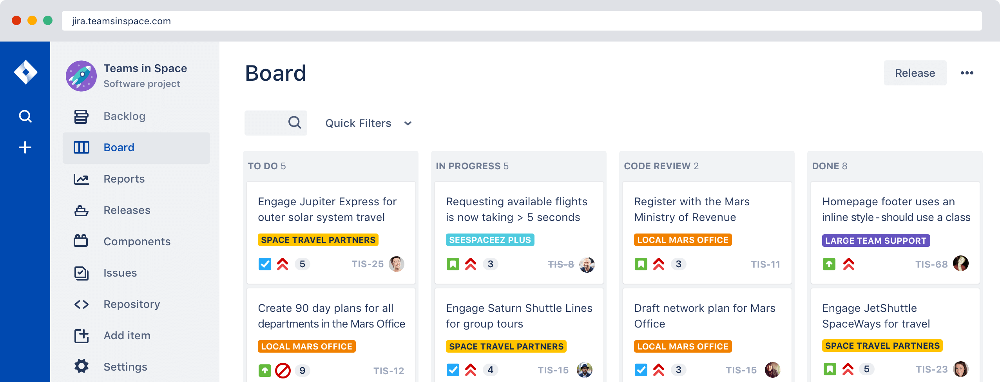
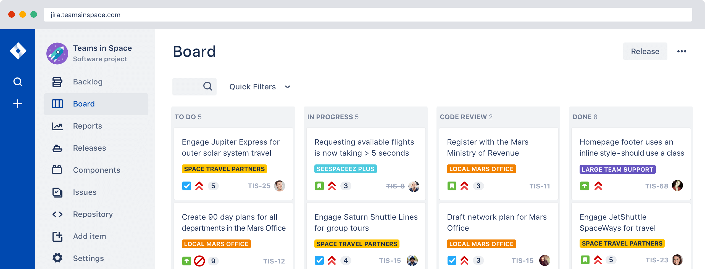
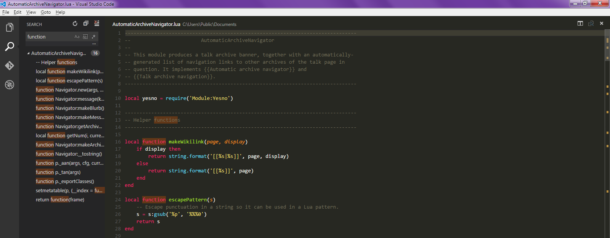
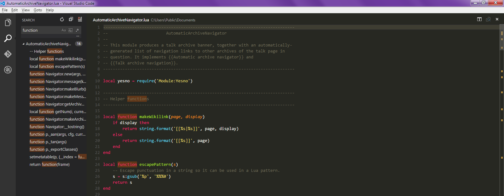

| Module | Cours | TD | |
|---|---|---|---|
| 01 | Introduction | 1h | 1h |
| 02 | Les bases du langage et les fonctions | 1h | 1h |
| 03 | Les objets et les tableaux | 1h | 1h |
| 04 | Manipulation du DOM | 1h | 1h |
| 05 | Programmation évènementielle | 1h | 1h |
| Total | 5h | 5h |
Créé chez Netscape en 1995 par Brendan Eich
Inspiré par Java mais pour le Web

World Wide Web Consortium
standardise le Web


ouvrent beaucoup de possibilités

 

 


React native, Ionic, …


Forte abstraction du système
Concepts abstraits (variables, tableaux, opérations arithmétiques, fonctions…)
Syntaxe naturelle (anglais)
Gestion automatique de la mémoire
Compilé

Interprèté

JavaScript définit des types (String, Number, Boolean…)
mais est très permissif sur leur manipulation
// Variable de type Number
let myVar = 12;
// Qui peut être réassignée avec un type String
myVar = 'a string';
// JavaScript peut convertir lui-même les types selon les cas
4 + '7'; // '47'
4 * '7'; // 28
2 + true; // 3
false - 3; // -3
mallocfree
La mémoire est
// Allocation lors de la déclaration
let myString = 'azerty';
// Désallocation au déréférencement
myString = null;
<html>
<head>
<!-- Embedded CSS -->
<style>p { color: red; }</style>
<!-- External CSS -->
<link href="my-style.css" rel="stylesheet">
</head>
<body>
<!-- Embedded JavaScript -->
<script>alert('Boom!');</script>
<!-- External JavaScript -->
<script src="my-script.js"></script>
</body>
</html>
Une variable est un contenant utilisé pour enregistrer une donnée
Une variable représente un concept
(un utilisateur, un panier d’achat…)
// Déclaration d'une variable
let var1;
// Assignation d'une variable
var1 = 'init value';
// Déclaration & assignation d'une variable
let var2 = 'init value';
// Déclaration & initialisation d'une variable
// qui ne contiendra qu'une seule valeur
const var1 = 'init value';
// Erreur de syntaxe -> const doit être assignée
const var2;
// Erreur de syntaxe -> const ne peut pas être réassignée
var1 = 'new value';
// Booléen vrai
const var1 = true;
// Booléen faux
const var2 = false;
// Chaîne de caractères délimitée par des guillemets simples
const var1 = 'a string';
// Chaîne de caractères délimitée par des guillemets doubles
const var2 = "a string";
// Longueur d'une chaîne de caractères
console.log('abcde').length; // Output -> 5
// Les Chaînes de caractères possèdent de nombreuses méthodes
console.log("Hi! How are you?".toUpperCase()); // Output -> HI! HOW ARE YOU?
console.log("Hi! How are you?".substring(4, 11)); // Output -> How are
console.log("Hi! How are you?".replace('o', 'X')); // Output -> Hi! HXw are you?
console.log("Hi! How are you?".replace(/o/g, 'X')); // Output -> Hi! HXw are yXu?
// Nombre entier positif (< 2^53 -1)
const var1 = 10;
// Nombre entier négatif (< -2^53 +1)
const var2 = -10;
// Nombre décimal positif (< 2^53 -1)
const var3 = 12.45;
// Nombre décimal négatif (< -2^53 +1)
const var4 = -12.45;
// Les nombres possèdent quelques méthodes
console.log(123.45.toString()); // Output -> '123.45'
console.log(123.45.toFixed(1)); // Output -> 123.4
// undefined
let undefinedVar; // undefined car non assignée
console.log(undefinedVar); // Output -> undefined
// null
const nullVar = null; // null est une vraie valeur
// assignée à la variable (pas de GC)
console.log(undefinedVar); // Output -> null
// NaN (Not a Number)
console.log(Number.parseInt('5')); // Output -> 5
console.log(Number.parseInt('Hi!')); // Output -> NaN
console.log(10 / 2); // Output -> 5
console.log('Hi!' / 2); // Output -> NaN

Installer Git
Créer un compte sur Github
Communiquer l’adresse email du compte créé
Cloner le dépôt Git de la formation (github.com/fmartinou/training-javascript)
Ouvrir la présentation training-javascript/course/index.html
Télécharger et installer Visual Studio Code
Installer les extensions suivantes
Ouvrir le repo Github de la formation dans Visual Studio Code
Télécharger et installer Google Chrome
Ouvrir la page d’accueil de l’Université Paul Sabatier
Ouvrir les outils de développement de Chrome (F12) et explorer les fonctionnalités (Eléments, Console, Sources…)
Dans la console, appliquer les fragments de code suivants
window.alert('Salut !');
console.log('Salut !');
window.open('https://media.giphy.com/media/LPgFwCQg4HQBvPihcn/giphy.gif');
document.getElementsByClassName('moteur-de-recherche-card')[0].style = 'background-image: url(https://bit.ly/2wZL7I2)';
Ouvrir le fichier index.html dans VsCode et le navigateur
Compléter les différentes méthodes et tester depuis le navigateur
Modifier la page pour externaliser le code JavaScript dans un fichier script.js
+ - * / ** %
// Addition
console.log(100 + 5); // Output -> 105
// Soustraction
console.log(100 - 5); // Output -> 95
// Multiplication
console.log(100 * 5); // Output -> 500
// Exponentiel
console.log(5 ** 2); // Output -> 25
// Modulo (reste de la division euclidienne)
console.log(5 % 2); // Output -> 1
// Incrément (equivalent à i = i + 1)
let i = 0;
console.log(i++); // Output -> 1
// Décrément (equivalent à i = i - 1)
let j = 0;
console.log(j--); // Output -> -1
// Concaténation
const x = 'début';
const y = 'fin';
console.log(x + ' ' + y); // Output -> début fin
// Interpolation
const name = 'Bob';
const age = 30;
const message = `Hello, my name is ${name} and I'm ${age}!`;
console.log(message);
// Output -> Hello, my name is Bob and I'm 30!
// Assignation simple
const x = 10;
const y = x;
console.log(y) // Output -> 10
// Assignation avec opération arithmétique
const x = 10;
let y = 5;
y += x; // Equivaut à y = y + x
y *= x; // Equivaut à y = y * x
y /= x; // Equivaut à y = y / x
y **= x; // Equivaut à y = y **/** x
// Assignation avec concaténation d'une chaîne de caractères
const x = 'début';
let y = 'fin';
// Egalité de valeur (mauvaise pratique)
console.log(1 == 1) ; // Output -> true
console.log(1 == '1'); // Output -> true
// Egalité de valeur et de type (bonne pratique)
console.log(1 === 1); // Output -> true
console.log(1 === '1'); // Output -> false
// Non égalité de valeur (mauvaise pratique)
console.log(1 != 2); // Output -> true
console.log(1 != '2'); // Output -> true
console.log(1 != '1'); // Output -> false
// Non égalité de valeur et de type (bonne pratique)
console.log(1 !== 2); // Output -> true
console.log(1 !== '2'); // Output -> true
console.log(1 !== '1'); // Output -> true
// Plus grand que
console.log(20 > 10); // Output -> true
console.log(10 > 10); // Output -> false
// Plus grand que ou égal
console.log(20 >= 10); // Output -> true
console.log(10 >= 10); // Output -> true
// Plus petit que
console.log(10 < 20); // Output -> true
console.log(10 < 10); // Output -> false
// Plus petit que ou égal
console.log(10 <= 20); // Output -> true
console.log(10 <= 10); // Output -> true
const vrai1 = true;
const vrai2 = true;
const faux1 = false;
const faux2 = false;
// Opérateur ET
console.log(vrai1 && vrai2); // Output -> true
console.log(vrai1 && faux1); // Output -> false
console.log(faux1 && faux2); // Output -> false
// Opérateur OU
console.log(vrai1 || vrai2); // Output -> true
console.log(vrai1 || faux1); // Output -> true
console.log(faux1 || faux2); // Output -> false
// Opérateur Négation
console.log(!vrai1); // Output -> false
console.log(!faux1); // Output -> true
// Exemples
console.log(
!(vrai1 && faux1) || (vrai2 || faux2)
); // Output -> true
if (condition) {
// exécute si condition est vraie
} else {
// exécute si condition est fausse
}
// Exemples de conditions
if (1 === 1) // Vrai
if (2 > 1) // Vrai
if (1 === 2) // Faux
if (2 <= 1) // Faux
switch (expression) { // l'expression à comparer
case 'Oranges': // un cas à comparer
console.log('Oranges'); // exécute si condition est vraie
break; // empêche les autres cas d'être évalués
case 'Mangues': // un cas à comparer
console.log('Mangues'); // exécute si condition est vraie
case 'Pommes': // un cas à comparer
console.log('Pommes'); // exécute si condition est vraie
break; // empêche les autres cas d'être évalués
default: // si pas de correspondance ou pas de break
console.log('Oups');
}
// Exemples de conditions
switch ('Oranges'){...} // Output -> Oranges
switch ('Mangues'){...} // Output -> Mangues Oups
switch ('Pommes'){...} // Output -> Pommes
switch ('Concombres'){...} // Output -> Oups
condition ? /* exécute si vrai */ : /* exécute si faux */;
// Exemple de ternaire
a === b ? console.log('CONDITION VRAIE') : console.log('CONDITION FAUSSE');
// Equivaut à
if (a === b) {
console.log('CONDITION VRAIE');
} else {
console.log('CONDITION FAUSSE');
}
// Exemple de ternaire avec assignation
const result = a === b ? 'CONDITION VRAIE' : 'CONDITION FAUSSE';
// Equivaut à
let result = 'CONDITION FAUSSE';
if (condition) {
result = 'CONDITION VRAIE';
}
while (condition) {
// exécute tant que la condition est vraie
}
// Exemples
let i = 0;
while (i < 3) {
i = i + 1;
console.log(i); // Output -> 1 / 2 / 3
}
for (initialValue; condition; increment) {
// exécute tant que condition est vraie
}
// Exemple
for (let i = 0; i < 3; i++) {
console.log(i); // Output -> 0 / 1 / 2
}
for (...) {
// début d'itération
continue; // suite du traitement ignorée -> passage à l'itération suivante
// fin d'itération
}
// Exemple avec un for
for (let i = 0; i < 5; i++) {
if (i === 2) {
continue;
}
console.log(i); // Output -> 0 / 1 / 3 / 4 / 5
}
// Exemple avec un while
let i = 0;
while (i < 5) {
i = i + 1;
if (i === 2) {
continue;
}
console.log(i); // Output -> 1 / 3 / 4 / 5
}
for (...) {
// début d'itération
break; // suite du traitement ignorée ET itérations suivantes ignorées
// fin d'itération
}
// Exemple avec un for
for (let i = 0; i < 5; i++) {
if (i === 3) {
break;
}
console.log(i); // Output -> 0 / 1 / 2
}
// Exemple avec un while
let i = 0;
while (i < 5) {
i = i + 1;
if (i === 3) {
break;
}
console.log(i); // Output -> 1 / 2
}
Un bloc de code conçu pour exécuter une tache
réutiliser du code (écrire 1 fois, utiliser N fois)
utiliser le même code avec des arguments différents pour produire des résultats différents
function name(param1, param2) {
// code à exécuter
}
function diplaySum(number1, number2) { // la fonction définit des paramètres
console.log(number1 + number2);
}
displaySum(1, 2); // la fonction est invoquée avec les arguments 1 et 2 Output -> 3
displaySum(3, 4); // la fonction est invoquée avec les arguments 3 et 4 Output -> 7
function computeSum(number1, number2) {
const sum = number1 + number2;
return sum; // transmet la valeur à l'appelant
// et interrompt l'exécution de la méthode
console.log('Cette ligne de code ne sera jamais exécutée !');
}
const result = computeSum(1, 2); // la fonction est invoquée
// et le retour est assigné dans result
console.log(result); // Output -> 3
global :
local :
const constGlobal = 'Je suis utilisable partout';
const letGlobal = 'Je suis utilisable partout';
function myFunction(param1) { // param1 n'existe que dans la fonction
const constInMyFunction = 'Je n\'existe que dans la fonction';
let letInMyFunction = 'Je n\'existe que dans la fonction';
for (let i = 0 ; i < 5 ; i++) { // i n'existe que dans la boucle
const constInMyLoop = 'Je n\'existe que dans la boucle';
let letInMyLoop = 'Je n\'existe que dans la boucle';
var varInMyLoop = 'Attention !!! J\'existe dans toute la fonction !!!'
}
}
Une variable peut être utilisée avant qu’elle ait été déclarée
JavaScript “hisse” par lui-même les déclarations en haut des blocs
letGlobal = 'xxx'; // variable utilisée avant de l'avoir déclarée
let letGlobal; // Déclarée après l'avoir assignée
function myFunction(param1) {
letInMyFunction = 'xxx'; // variable utilisée avant de l'avoir déclarée
let letInMyFunction; // Déclarée après l'avoir assignée
}
Immediately Invoked Function Expression
Empêche de polluer le scope global
(function () {
const myVar = 'something';
}) ();
console.log(myVar) // Output -> Uncaught ReferenceError: myVar is not defined
Elles fournissent une syntaxe plus courte
pour la déclaration des fonctions
// Déclaration classique
const sumFunction = function(a, b) {
return a + b;
}
// Equivalent avec une fonction Arrow
const sumFunction = (a, b) => {
return a + b;
}
// Equivalent avec une fonction Arrow (return implicite)
const sumFunction = (a, b) => a + b;
// !!! Attention !!!
// Dans une Arrow, this représente le propriétaire de la fonction
// Et non celui qui l'invoque !!!
// Commentaire d'1 seule ligne
console.log('code js');
/*
Commentaire multi-ligne
ligne 1...
ligne 2...
...
*/
console.log('code js');
JsDoc très largement inspirée de JavaDoc
Génère une documentation à partir de commentaires structurés
/** @class Circle representing a circle. */
class Circle {
/**
* Creates an instance of Circle.
*
* @constructor
* @author: moi
* @param {number} r The desired radius of the circle.
*/
constructor(r) {
/** @private */ this.radius = r
/** @private */ this.circumference = 2 * Math.PI * r
}
/**
* Returns the pre-computed circumference of the Circle.
*
* @return {number} The circumference of the circle.
* @since 1.1.0
*/
getCircumference() {
return this.circumference
}
}
// jsdoc est un module node
npm install -g jsdoc
jsdoc myScript.js // Génère la documentation html sous ./out/

| Annotation | Description |
|---|---|
| @author | Auteur du code |
| @constructor | Constructeur d’une classe |
| @deprecated | Méthode comme dépréciée |
| @exports | Elément exporté par le module |
| @param | Paramètre d’une fonction |
| @private | Elément est privé |
| @returns | Valeur de retour |
| @see | Référence un autre élément |
| @todo | Elément non terminé |
| @throws | Exception pouvant être levée par une fonction |
| @version | Version de la librairie |
Implémenter une fonction isModuloZero qui :
Tester depuis le navigateur
Simplifier le code avec une expression ternaire
Implémenter une fonction isItWeekendYet qui :
Tester depuis le navigateur que les messages correspondent à ceux attendus
Optimiser le code pour factoriser les morceaux de messages communs
Exemple :
Si
plage = 5
Alors
Sequence =
(-4 * -4 * -4 * -4)
+ (-2 * -2 * -2 * -2)
+ (2 * 2 * 2 * 2)
+ (4 * 4 * 4 * 4)
Output -> 40
Un objet est une structure de données qui répond à des messages
Les données qui le décrivent sont appelées des
attributs
La réception d’un message provoque l’exécution d’une
méthode
Les messages qu’il peut recevoir définissent son
interface
Exemple : Une voiture Renault Clio Verte
JSON (JavaScript Object Notation)
const clioGreen = {
// Attributs
brand: 'Renault',
model: 'Clio',
color: 'Green',
horsePower: 86,
// Méthodes (une méthode est juste un attribut de type Function ;)
moveForward: function(coordinateX, coordinateY) { /* implémentation */ },
switchHeadLights: function(state) { /* implémentation */ },
};
const clioGreen = {
brand: 'Renault',
model: 'Clio',
color: 'Green',
motor: {
horsePower: 86,
cylinder: 4,
fuel: 'E85',
}
};
console.log(clioGreen.brand) // Output -> Renault
console.log(clioGreen['brand']) // Output -> Renault
clioGreen.model = 'Twingo'; // Modifie l'attribut
console.log(clioGreen.motor.fuel) // Output -> E85
console.log(clioGreen['motor']['fuel']) // Output -> E85
const clioGreen = {
brand: 'Renault',
model: 'Clio',
color: 'Green',
moveForward: function(coordinateX, coordinateY) {
console.log('Moving...');
},
switchHeadLights: function(state) {
console.log('Swithing headlights...');
},
};
clioGreen.moveForward(123, 456);
clioGreen.switchHeadLights('ON');
console.log(clioGreen.moveForward); // Output -> ƒ (coordinateX, coordinateY) {}
console.log(clioGreen.moveForward.name); // Output -> moveForward
fait référence à l’objet propriétaire de la méthode
const clioGreen = {
brand: 'Renault',
model: 'Clio',
headLights: 'OFF',
switchHeadLights: function(state) {
console.log('Swithing headlights...');
this.headLights = state; // this référence le propriétaire
// de la fonction switchHeadLights
},
};
console.log(clioGreen.headLights); // Output -> OFF
clioGreen.switchHeadLights('ON');
console.log(clioGreen.headLights); // Output -> ON
Tout est public !
Aucune notion de public / protected / private !
const myObj = {
publicMethod: function() {
console.log('Is it public? Yep!');
},
privateMethod: function() {
console.log('Is it private? Nope!');
},
};
console.log(myObj.publicMethod()); // Output -> Is it public? Yep!
console.log(myObj.privateMethod()); // Output -> Is it private? Nope!
Javascript ne se base pas sur sur un modèle à base de classes
Un prototype fournit à l’objet
un constructeur,
des attributs,
des méthodes
// Récupérer le constructeur de l'objet String
String.prototype.constructor
// Récupérer la définition de la méthode toUpperCase
String.prototype.toUpperCase
// Modifier la méthode toUpperCase
console.log('Hi there!'.toUpperCase()); // Output -> HI THERE!
String.prototype.toUpperCase = () => 'Hack hack hack!';
console.log('Hi there!'.toUpperCase()); // Output -> Hack hack hack!
// Ajouter une méthode à l'objet String
String.prototype.boum = () => function () { return `${this} Boum!` };
console.log('Hi there!'.boum()); // Output -> Hi there! Boum!
// Un modèle de classe est juste une fonction
function Car(brand, model, color) {
this.brand = brand;
this.model = model;
this.color = color;
this.moveForward = function(x, y) {
console.log(`I'm moving to ${x}:${y}!`);
}
}
// Construction des objets grace au mot-clé 'new'
const greenClio = new Car('Renault', 'Clio', 'Green');
const blue208 = new Car('Peugeot', '208', 'Blue');
// Utilisation des objets
greenClio.moveForward(123, 456);
class Car {
// Le Constructeur
constructor(brand, model, color) {
this.brand = brand;
this.model = model;
this.color = color;
}
// Une méthode
moveForward(x, y) {
console.log(`I'm moving to ${x}:${y}!`);
}
// Une méthode statique
static whoAreYou() {
console.log('I\'m a Car!');
}
}
// Construction des objets grace au mot-clé 'new'
const greenClio = new Car('Renault', 'Clio', 'Green');
// Utilisation des objets
greenClio.moveForward(123, 456);
// Accès à une méthode statique
Car.whoAreYou();
class Pet {
constructor(name) { this.name = name }
eat() {
console.log('Miam miam!');
}
}
class Dog extends Pet { // extends permet de définir l'héritage
constructor(name, breed) {
super(name); // super fait référence au parent
this.breed = breed;
}
barf() {
console.log('Wouaf wouaf!');
}
}
const rex = new Dog('Rex');
console.log(rex.name): // Output -> Rex
rex.eat(); // Output -> Miam miam!
rex.bark(); // Output -> Wouaf wouaf!
Un objet qui
stocke une liste ordonnée dynamique d’éléments
possède des méthodes pour manipuler ses éléments
// Exemple d'un tableau contenant des chaînes de caractères
const stringArray = [ 'Pomme', 'Poire', 'Banane' ];
// Exemple d'un tableau contenant des Objets
const objectArray = [
{ 'name': 'Pomme', 'quantity': 5},
{ 'name': 'Pomme', 'quantity': 12},
{ 'name': 'Pomme', 'quantity': 6},
];
// Exemple d'un tableau contenant des fonctions
const functionArray = [
function(a, b) { return a + b; },
function() { return 'Hello!'; },
];
// Exemple d'un tableau contenant différents types
const mishmashArray = [
'Pomme',
123.45,
true,
{ 'name': 'Pomme', 'quantity': 5},
];
const arr = [ 'One', 'Two', 'Three' ];
console.log(arr[-1]); // Output -> undefined
console.log(arr[0]); // Output -> One (1er élément est à l'index 0 !!!)
console.log(arr[1]); // Output -> Two
console.log(arr[2]); // Output -> Three
console.log(arr[3]); // Output -> undefined
const arr = [ 'Pomme', 'Poire', 'Banane' ];
arr[1] = 'Kiwi' // Remplace Poire par Kiwi
console.log(arr) // Output -> [ 'Pomme', 'Kiwi', 'Banane' ]
arr[3] = 'Ananas' // Ajoute Ananas en quatrième position
console.log(arr) // Output -> [ 'Pomme', 'Kiwi', 'Banane', 'Ananas' ]
arr[5] = 'Mangue' // Ajoute Mangue en sixième position
console.log(arr) // Output -> [ 'Pomme', 'Kiwi', 'Banane', 'Ananas', undefined, 'Mangue' ]
const arr = [ 'Pomme', 'Poire', 'Banane' ];
// Récupérer la taille d'un tableau
console.log(arr.length) // Output -> 3
// Récupérer le dernier élément
console.log(arr[arr.length -1]) // Output -> Banane
// Itérer sur tous les éléments
for (let i = 0 ; i < arr.length ; i++) {
console.log(arr[i]) // Output -> Pomme puis Poire puis Banane
}
const arr = [ 'Pomme', 'Poire', 'Banane' ];
// Avec delimiter par défaut (', ')
console.log(arr.toString()) // Output -> 'Pomme, Poire, Banane'
// Avec delimiter spécifique
console.log(arr.toString(' ** ')) // Output -> 'Pomme ** Poire ** Banane'
const arr = [ 'Pomme', 'Poire', 'Banane' ];
function logItem(item) {
console.log(item);
}
// forEach prend en paramètre une fonction f(item)
arr.forEach(logItem);
// Equivaut à (fonction anonyme)
arr.forEach(function(item) {
console.log(item);
});
// Equivaut à (fonction Arrow)
arr.forEach(item => console.log(item));
// Equivaut à (for)
for (let i = 0 ; i < arr.length ; i++) {
logItem(arr[i]);
}
const arr = [ 'Pomme', 'Poire', 'Banane' ];
// Ajoute un nouvel élément en fin de liste
arr.push('Mangue'); // [ 'Pomme', 'Poire', 'Banane', 'Mangue' ]
// Equivaut à
arr[arr.length] = 'Mangue'; // [ 'Pomme', 'Poire', 'Banane', 'Mangue' ]
const arr = [ 'Pomme', 'Poire', 'Banane' ];
console.log(arr.pop()); // Banane
console.log(arr); // [ 'Pomme', 'Poire' ]
const arr = [ 'Pomme', 'Poire', 'Banane' ];
console.log(arr.shift()); // Output -> Pomme
console.log(arr); // Output -> [ 'Poire', 'Banane' ]
const arr = [ 'Pomme', 'Poire', 'Banane' ];
console.log(arr.unshift('Mangue')); // Output -> 4 (la nouvelle taille)
console.log(arr); // Output -> [ 'Mangue', 'Pomme', 'Poire', 'Banane' ]
array.splice(i, nToDelete, newItem1, newItem2,...)
const arr = [ 'A', 'B', 'C', 'D', 'E', 'F', 'G', 'H' ];
// En position 4, supprimer 2 élément et ajouter 3 nouveaux éléments
const result = arr.splice(4, 2, 'X', 'Y', 'Z'));
console.log (result): // Output -> [ 'E', 'F' ]
console.log(arr); // Output -> ['A', 'B', 'C', 'D', 'X', 'Y', 'Z', 'G', 'H' ]
array.concat(arr1, arr2, arr3, ...)
const arr1 = [ 'A', 'B' ];
const arr2 = [ 'C', 'D' ];
const arr3 = [ 'E', 'F' ];
// Concaténér 3 tableaux
const result = arr1.concat(arr2, arr3);
console.log (result): // Output -> [ 'A', 'B', 'C', 'D', 'E', 'F' ]
// Les tableaux initiaux ne sont pas altérés
console.log(arr1); // Output -> [ 'A', 'B' ]
console.log(arr2); // Output -> [ 'C', 'D' ]
console.log(arr3); // Output -> [ 'E', 'F' ]
const arr = [ 'A', 'B', 'C', 'D', 'E', 'F', 'G', 'H' ];
// Extrait un tableau de à partir de l'index 2 jusqu'à l'index 4
console.log(array.slice(2, 4)); // Output -> ['C', 'D', 'E']
// Si le 2ème paramètre est omis, alors découpe jusqu'à la fin
console.log(array.slice(2)); // Output -> ['C', 'D', 'E', 'F', 'G', 'H']
// Le tableau initial n'est pas altéré
console.log(arr1); // Output -> [ 'A', 'B', 'C', 'D', 'E', 'F', 'G', 'H' ]
const stringArray = [ 'C', 'A', 'B', 'E', 'D'];
const numArray = [ 4, 5, 10, 6, 1, 3, 7, 8, 9, 2 ];
const objectArray = [ { 'name': 'Pomme', 'quantity': 5},
{ 'name': 'Pomme', 'quantity': 12},
{ 'name': 'Pomme', 'quantity': 6}];
// Tri (ordre naturel chaîne de caractères)
stringArray.sort();
console.log(stringArray); // Output -> [ 'A', 'B', 'C', 'D', 'E' ]
numArray.sort(); // Tri faux pour des nombres
console.log(numArray); // Output -> [ 1, 10, 2, 3, 4, 5, 6, 7, 8, 9]
// Possibilité de passer une fonction de tri f(item1, item2)
// Si la fonction retourne un nombre positif => item2 sera avant item1
// Si la fonction retourne un nombre négatif => item1 sera avant item2
// Si la fonction retourne 0 => pas de changement
numArray.sort(function(item1, item2) {
return item2 - item1;
});
console.log(numArray); // Output -> [ 1, 2, 3, 4, 5, 6, 7, 8, 9, 10]
// Equivalent (Arrow)
numArray.sort((item1, item2) => return item2 - item1);
// Exemple de tri d'un tableau d'objets
objectArray.sort((fruit1, fruit2) => return fruit2.quantity - fruit1.quantity);
const arr1 = [ 'Pomme', 'Poire', 'Banane'];
const newArray = arr1.map(function (item) {
return {
name: item,
quantity: 1,
};
});
console.log(newArray); // Output ->
// [
// { name: 'Pomme', quantity: 1},
// { name: 'Poire', quantity: 1},
// { name: 'Banane', quantity: 1},
// ]
// Equivalent (Arrow)
const newArray = arr1.map(item => ({ name: item, quantity: 1 }));
return {
name: item,
quantity: 1,
};
});
const arr1 = [ -3, -2, -1, 0, 1, 2, 3 ];
const newArray = arr1.filter(function (item) {
return item >= 0;
});
console.log(newArray); // Output -> [ 0, 1, 2, 3 ]
// Equivalent (Arrow)
const newArray = arr1.filter(item => item >= 0);
const arr1 = [ 0, 1, 2, 3 , 4, 5, 6];
// Exemple de fonction qui cumule toutes les valeurs
const result = arr1.reduce(function (newValue, item, index, array) {
return newValue + item;
});
console.log(result); // Output -> 21
// Equivalent (Arrow)
const newArray = arr1.reduce((newValue, item) => newValue + item);
// Il est possible de passer une valeur initiale
console.log(arr1.reduce((newValue, item) => newValue + item), 10); // Output -> 31
const arr = [ 0, 1, 2, 3 , 4, 5, 6];
// Exemple : Est-ce que toutes les valeurs sont positives
console.log(arr.every(item => item > 0)); // Output -> false
// Exemple : Est-ce que une valeur au moins est positive
console.log(arr.some(item => item > 0)); // Output -> true
array.indexOf() array.lastIndexOf
const arr = [ 'Pomme', 'Poire', 'Banane','Mangue', 'Mangue', 'Ananas' ];
// Quel est la 1ère position de l'élément 'Mangue' ?
console.log(arr.indexOf(item => item === 'Mangue')); // Output -> 3
// Quel est la dernière position de l'élément 'Mangue' ?
console.log(arr.lastIndexOf(item => item === 'Mangue')); // Output -> 4
// Exemple : Quel est la position de l'élément 'Courgette' ?
console.log(arr.indexOf(item => item === 'Courgette')); // Output -> -1
// (non trouvé)
const arr = [ 1, 5, 5, 8, 13, 21 ];
// Trouver le 1er élément plus grand que 10 ?
console.log(arr.find(item => item > 10)); // Output -> 13
// Trouver un élément qui n'existe pas ?
console.log(arr.find(item => item > 100)); // Output -> undefined
// Trouver le 1er fruit dont la quantité est supérieure à 1
console.log([
{ 'name': 'Pomme', 'quantity': 1},
{ 'name': 'Poire', 'quantity': 1},
{ 'name': 'Kiwi', 'quantity': 6},
].find(item => item.quantity > 1)); // Output ->
// {
// 'name': 'Kiwi',
// 'quantity': 6
// }
Une erreur est un objet
qui fournit de l’information lorsque quelque chose ne fonctionne pas comme attendu
// Une erreur contient un message
const myError = new Error('Ceci n\'était pas prévu !');
// Par défaut, le nom d'une erreur est Error
console.log(myError.name) // Output -> Error
// Il est possible de la nommer différemment
myError.name = 'MyError';
console.log(myError.name) // Output -> MyError
// Une erreur est émise avec le mot-clé throw
const myError = new Error('Ceci n\'était pas prévu !');
// Throw interrompt la pile d'exécution
throw myError;
console.log('Ce code ne sera jamais appelé !');
function itWillThrow() {
throw new Error('Boum!');
}
try { // Le code à protéger est dans un try
itWillThrow();
} catch (err) { // Si une erreur se produit, elle est attrapée dans un catch
console.log(`OMG! An error occured : ${err.message}`);
} finally { // Toujours exécuté (qu'une erreur se produise ou non)
console.log('Always called!');
}

Modéliser chaque joueur sous forme d’un objet qui :
Implémenter la méthode de déplacement
random fournie)Implémenter la méthode play
Implémenter une Classe LabError qui étend Error
Implémenter une fonction sum(a, b) qui
LabError lorsque le résultat de la somme est NaNImplémenter une fonction callSum(a, b) qui
sumTester avec les boutons sur la page
sont sur un bateau
Le BOM (Browser Object Model)
est une API qui permet au JavaScript d’interragir avec le navigateur
Attention !
Ce n’est pas une API normalisée !
Le DOM (Document Object Model)
est l’arbre des objets créés par le navigateur quand une page est chargée

Le BOM est une super API du DOM

Le DOM est une interface de programmation normalisée (W3C).
Il permet à des scripts d’intéragir avec le contenu de la page :
L’API du DOM permet de manipuler des éléments
Les éléments sont de simples objets JavaScript qui :
contiennent des méthodes
contiennent des propriétés
émettent des évènements
écoutent des évènements
Objet racine qui contient tous les autres objets de la page
Permet notamment de chercher et créer des éléments
// Rechercher un élément par son attribut id
const myDiv = document.getElementById('myDivId');
// Rechercher tous les éléments qui ont pour attribut name
const myDiv = document.getElementsByName('myDivName');
// Rechercher tous les éléments par nom de tag (div, p, input...)
const myDiv = document.getElementsByTagName('div');
// Rechercher tous les éléments par nom de classe CSS
const myDiv = document.getElementsByClassName('my-class');
// Rechercher tous les éléments par sélecteur CSS
const myDiv = document.querySelectorAll('div.blue');
// Créer un nouvel élément de type div
// Attention !!
// Pour le moment, l'élément créé n'appartient pas au DOM !!)
const myNewDiv = document.createElement('div');
Comme dans un arbre généalogique, les éléments du DOM ont
un parent, des frères et des enfants
<div id="root">
<div id="subroot">
<div id="leaf1"></div>
<div id="leaf2"></div>
</div>
</div>
<script>
const root = document.getElementById('root');
// La propriété children contient un Array contenant les enfants
console.log(root.children[0].id); // Output -> subroot
console.log(root.children[0].children[0].id); // Output -> leaf1
console.log(root.children[0].children[1].id); // Output -> leaf2
// La propriété parentNode permet de récupérer le parent
console.log(root.children[0].parentNode.id); // Output -> root
</script>
const root = document.getElementById('root');
// Modifier le contenu de l'élément
root.innerHTML = 'New text!!!';
// Modifier le contenu de l'élément (HTML)
root.innerHTML = '<div><p>New paragraph</p></div>';
// Créer / modifier une propriété d'un élément
root.name = 'new name';
root.customProp = 'custom';
// Créer une méthode sur un élément
root.whoAreYou = function () {
console.log('I am who I am!');
}
// Appeler une méthode sur un élément
root.whoAreYou(); // Output -> I am who I am!
// Modifier les propriétés de style (CSS) d'un élément
root.style.backgroundColor = 'red';
// Manipuler les classes (CSS) d'un élément
root.classList.add('custom-class');
console.log(root.classList) // Output -> [ custom-class ]
JavaScript est “Single Threaded” = 1 seule instruction
peut être exécutée à la fois !
Si une instruction prend du temps, elle retarde (ou bloque) l’exécution des suivantes !
Comment faire pour exécuter plusieurs choses en même temps (concurrence) ???
Le moteur JavaScript peut se résumer à l’exécution
d’une boucle infinie qui “dépile” du travail à faire.
On pourrait la schématiser par le code suivant
while (true){
if (stack[0]) {
execute(stack.shift())
}
}
Il ne faut jamais bloquer l’
event loop !
function bar() { console.log('bar') }
function baz() { console.log('baz') }
function foo() {
console.log('foo');
bar();
baz();
}
foo();

Les opérations “couteuses”
doivent obligatoirement être exécutées à l’extérieur de la boucle.
Il faut donc un moyen de reprendre la main à l’issue de l’exécution.
Pour cela, on peut utiliser des Fonctions de Rappel (Callbacks)
// Une fonction callback qui prend le résultat en paramètre
function myCallback(response) {
console.log('Http Response received');
}
// Une fonction qui effectue un appel HTTP
function getDataFromServer() {
console.log('Begin');
const request = new XMLHttpRequest();
request.open('get', '/my-api');
// Une définition de fonction est passée afin qu'elle soit invoquée
// lorsque la réponse HTTP est reçue
request.onload = myCallback;
// La méthode send est asynchrone et exécutée en dehors de l'event loop
request.send();
console.log('End');
}
// Ne bloque pas l'interface utilisateur même si le serveur met 10s à répondre
getDataFromServer();
// Output -> Begin / End / Http Response received
Les callbacks sont exécutés une fois que la stack d’appel est vide !
Un fait qui s’est produit dans le système
Il est émis par un producteur
Un abonné peut y souscrire pour être notifié

Les événements permettent de découpler applicativement
les émetteurs
et les consommateurs
Les éléments du DOM peuvent émettre et écouter des événements
Ecouter un événement revient à positionner un callback qui sera exécuté en réaction à l’événement
Exemples :
Clic de souris sur un élément
Page Web chargée
Le contenu d’un champ texte a changé
Appui sur la touche ‘y’ du clavier
…
<!-- Fonction JS à exécuter quand l'événement click est émis par le bouton -->
<button onclick="myCallback()">Click it!</button>
<!-- Il est aussi possible d'accéder à l'événement avec l'argument event -->
<button onclick="myCallbackWithEvent(event)">Click it!</button>
<script>
function myCallback() {
console.log('Le bouton a été cliqué !');
}
function myCallbackWithEvent(event) {
console.log('Le bouton a été cliqué !');
console.log(event)
}
</script>
<button id="myBtn" >Click it!</button>
<script>
function myCallbackWithEvent(event) {
console.log('Le bouton a été cliqué !');
console.log(event)
}
// Ajoute un listener sur l'evt nommé 'click'
document.getElementById('myBtn').addEventListener('click', myCallbackWithEvent);
</script>
<button id="myBtn" >Click it!</button>
<script>
function myCallback() {}
// Ajoute un listener sur l'evt nommé 'click'
document.getElementById('myBtn').addEventListener('click', myCallback);
// Supprime le listener
document.getElementById('myBtn').removeEventListener('click', myCallback);
</script>
Tous les événement du DOM héritent de l’Objet Event
En fonction de leur type (Focus, Keyboard, Mouse…),
ils vont contenir certaines propriétés (position souris, touche appuyée…)
const myEvent = ...;
console.log(event.type); // Output -> Le type de l'evt (click, mouseDown...)
console.log(event.target); // Output -> L'élément qui a émis l'evt
const myCustomEvent = new Event('look');
document.getElementById('myBtn').dispatchEvent(myCustomEvent);
Par défaut, les événements émis déclenchent les listeners sur
l’élément qui a émis l’événement
et tous ses parents !
<div onclick="console.log('div1')">
<div onclick="console.log('div2')">
<button onclick="console.log('button')">Click it!</button>
</div>
</div>
// Output -> button / div2 / div1
stopPropagation
empêche les handlers des parents de se déclencher
stopImmediatePropagation
empêche tous les autres handlers de se déclencher
<div onclick="(event) => console.log('div1')">
<div onclick="(event) => console.log('div2'); event.stopPropagation()">
<button onclick="console.log('button')">Click it!</button>
</div>
</div>
// Output -> button / div2
Tous les événements ont
une propriété target
: élément qui a émis l’événement
une propriété currentTarget : élément qui a réagi
<div id="div1" onclick="log(event)">
<div id="div2" onclick="log(event)">
<button id="btn" onclick="log(event)">Click it!</button>
</div>
</div>
<script>
function log(e) {
console.log(`target=${e.target.id} / currentTarget=${e.currentTarget.id}`);
}
</script>
// Output ->
// target=btn / currentTarget=btn
// target=btn / currentTarget=div2
// target=btn / currentTarget=div1
Un formulaire permet de récupérer
des données provenant de l’utilisateur
Il est souvent destiné à être envoyé vers un serveur
(via HTTP par ex)
Il contient des libellés et des contrôles

<html>
<head></head>
<body>
<span>Des éléments avant le formulaire</span>
<!-- Un formulaire -->
<form>
</form>
<span>Des éléments après le formulaire</span>
</body>
</html>
<form>
<input type="text" name="input1" value="Hello!">
</form>
<form>
<!-- le label est attaché au contrôle avec la propriété for= -->
<!-- le contrôle doit obligatoirement comporter un id -->
<label for="input1Id">What do you want to say?</label>
<input type="text" id="input1Id" name="input1Name" value="Hello!">
<label for="input2Id">Do you want to click?</label>
<input type="checkbox" id="input2Id" name="input2Name">
<label for="input1Id">I can also trigger the text input!</label>
</form>
Beaucoup de types (champ, case à cocher, bouton…)
<input type="text" value="Hello!">
<input type="checkbox">
<input type="radio" name="check" value="A">
<input type="radio" name="check" value="B">
<input type="date">
<input type="file">
<input type="password" value="secret">
<select name="cars">
<option value="cit">Citroën</option>
<option value="peu">Peugeot</option>
<option value="ren">Renault</option>
</select>
<textarea rows="4" cols="30">
Line1
Line2
Line3
Line4
</textarea>
<form action="https://estcequecestbientotleweekend.fr">
<!-- bouton par défaut -->
<button type="button" onclick="alert('Hello!')">Click Me!</button>
<!-- bouton qui permet de soumettre un formulaire -->
<button type="submit">Submit!</button>
<!-- bouton qui permet de réinitialiser un formulaire -->
<button type="reset">Reset!</button>
</form>
Les événements qui peuvent être émis dépendent des types de contrôle
<!-- l'événement onchange est émis lorsque la valeur change -->
<input type="text" onchange="alert('Input value is ' + this.value)">
<input type="checkbox" onchange="alert('Check box is ' + this.checked)">
<!-- L'événement keyup est émis quand une touche enfoncée 'remonte' -->
<input type="text" onkeyup="alert('Key is ' + event.keyCode)">
<form method="POST" action="/post-my-form">
<input type="text" name="mytext"value="mytextvalue">
<input type="checkbox" name="mycheck"value="checkIsChecked" checked>
<button type="submit">Submit!</button>
</form>
POST /post-my-form HTTP/1.1
Host: myserver.acme
Content-Type: application/x-www-form-urlencoded; charset=utf-8
Content-Length: 137
mytext=mytextvalue&mycheck=checkIsChecked
Attention !
Seuls les contrôles possédant un attribut name sont envoyés
(les attributs id ne sont pas utilisés)
Afficher la liste triée des marques de voitures disponibles
Proposer la liste triée des modèles disponibles pour la marque sélectionnée
Proposer la liste triée des couleurs disponibles pour le modèle sélectionné
Afficher le résultat de la sélection de l’utilisateur quand il clique sur le bouton
function heavyBar(callback) {
// une tache lente mais asynchrone... puis... appel du callback avec le résultat
callback(result);
};
function callMeBackOnceItsDone(result) {
console.log(`Result ${result}`);
}
function foo() {
console.log('foo commence');
heavyBar(callMeBackOnceItsDone);
console.log('foo est terminé');
}
foo();

Il est très commun de ne pas nommer les callbacks.
function foo() {
doSomethingAsynch((result) => {
console.log(`Result ${result}`);
});
}
Par convention, les callbacks prennent 2 paramètres en entrée :
function foo() {
function callMeBackOnceItsDone(err, result) {
if (err) {
console.log(`Ouch! An error occured: ${err.message}`);
} else {
console.log(`Yeah! It worked: ${result}`);
}
}
doSomethingAsynch(callMeBackOnceItsDone);
}
Un try { doSomethingAsynch() } catch (err){ }
ne sert à rien…
Le chainage de callbacks est difficile à lire…
function foo() {
doAsyncThing1((err1, result1) => {
if (err1) {
console.log(`An error occured: ${err1.message}`);
} else {
doAsyncThing2(result1, (err2, result2) => {
if (err2) {
console.log(`An error occured: ${err2.message}`);
} else {
doAsyncThing3(result2, (err3, result3) => {
if (err3) {
console.log(`An error occured: ${err3.message}`);
} else {
doAsyncThing4(result3, (err4, result4) => {
if (err4) {
console.log(`An error occured: ${err4.message}`);
} else {
console.log(`Finally my result! ${result4}`);
}
});
}
});
}
});
}
});
}
function foo(name, mood) {
console.log(`Hi, I'm ${name} and I'm ${mood}!`);
}
// 5 secondes plus tard, foo est invoquée
window.setTimeout(foo, 5000, 'Joe', 'happy');
// Toutes les 10 secondes, foo est invoquée
window.setInterval(foo, 10000, 'Joe', 'happy');
const timeoutDefferedId = window.setTimeout (foo, 5000, () => console.log('Hi!')));
const intervalDefferedId = window.setInterval(foo, 5000, () => console.log('Hi!')));
// Annule l'invocation de la fonction à venir
window.clearTimeout(timeoutDefferedId);
// Annule les invocations de la fonction à venir
window.clearInterval(intervalDefferedId);
// La fonction effectuera réellement son traitement dans 1 seconde
function myAsyncFunction(callback) {
setTimeout(() => {
doStuff();
callback('I\'m back!');
}, 1000);
}
// myAsyncFunction ne renvoie rien : le résultat sera passé au callback
const whatIsIt = myAsyncFunction((result) => { console.log(result) });
console.log(whatIsIt); // undefined
Un Objet simplifiant le chainage d’opérations asynchrones
Opération réussie ? La Promesse est résolue
Opération échouée ? La Promesse est rejetée
On lui attache des callbacks pour reprendre la main
// Avec un callback "à l'ancienne"
myAsyncFunction((result) => { console.log(result) });
// Avec une Promesse
const promise = myAsyncFunction();
promise.then((result) => { console.log(result) });
function successCallback(result) {
console.log(`Yeah! It worked! Result=${result}`);
}
const promise = myAsyncFunction();
promise.then(successCallback);
function failureCallback(error) {
console.log(`Ouch! Error=${error.message}`);
}
const promise = myAsyncFunction();
// Si on souhaite uniquement intercepter les erreurs
promise.catch(failureCallback);
function foo() {
doAsyncThing1((err1, result1) => {
if (err1) { console.log(`Error: ${err1.message}`); }
else {
doAsyncThing2(result1, (err2, result2) => {
if (err2) { console.log(`Error: ${err2.message}`);}
else {
doAsyncThing3(result2, (err3, result3) => {
if (err3) { console.log(`Error: ${err3.message}`); }
else {
doAsyncThing4(result3, (err4, result4) => {
if (err4) { console.log(`Error: ${err4.message}`); }
else {
console.log(`Finally my result! ${result4}`);
}
});
}
});
}
});
}
});
}
La puissance des Promesses est le chainage
car les méthodes
then
et
catch
renvoient de nouvelles promesses
function foo() {
const promise1 = doAsyncThing1();
const promise2 = promise1.then(doAsyncThing2);
const promise3 = promise2.then(doAsyncThing3);
const promise4 = promise3.then(doAsyncThing4);
promise1.catch((err) => console.log(`Error: ${err.message}`));
promise2.catch((err) => console.log(`Error: ${err.message}`));
promise3.catch((err) => console.log(`Error: ${err.message}`));
promise4.catch((err) => console.log(`Error: ${err.message}`));
}
Le code est plus lisible et ne dérive plus !
function foo() {
// Si toutes les erreurs peuvent être traitées de manière identique
doAsyncThing1()
.then(doAsyncThing2)
.then(doAsyncThing3)
.then(doAsyncThing4)
.catch((err) => console.log(`Error: ${err.message}`));
}
function oldDirtyFunctionWithCallback(arg1, arg2, callback) {
setTimeout(() => `Fine, you call me with ${arg1}, ${arg2}`, 1000);
}
// Wrap an old code with Promises
function sexyFunctionWithPromise(arg1, arg2) {
return new Promise((resolve, reject) => {
oldDirtyFunctionWithCallback(arg1, arg2, (error, result) => {
if (error) {
reject(error);
} else {
resolve(result);
}
});
});
}
function foo() {
sexyFunctionWithPromise()
.then((result) => console.log(result))
.catch(error) => console.log(error));
}
Sucre syntaxique pour masquer l’usage des Promesses
Le code est plus naturel car écrit comme du code synchrone
async function foo() {
const result1 = await doAsyncThing1();
const result2 = await doAsyncThing2(result1);
const result3 = await doAsyncThing2(result2);
const result4 = await doAsyncThing2(result3);
}
Attention !!
l’exécution reste asynchrone et non bloquante
(l’event loop ne sera pas bloquée)
Indique qu’une fonction est asynchrone et renvoie une promesse
async function foo() {
// perform async tasks...
return promise;
}
Permet d’attendre la résolution d’une promesse
Seules les fonctions async peuvent utiliser le mot-clé await
async function foo() {
// Result contiendra le résultat de la promesse résolue par asyncTask
const result = await asyncTask();
// result est utilisable dès la ligne suivante
console.log(result);
}
On peut même utiliser try {} catch(e) {}
pour intercepter les promesses rejetées !
// Avec des Promesses
function foo() {
doAsyncThing1()
.then(doAsyncThing2)
.then(doAsyncThing3)
.then(doAsyncThing4)
.catch((err) => console.log(`Error: ${err.message}`));
}
// Avec async/await
async function foo() {
try {
const result1 = await doAsyncThing1();
const result2 = await doAsyncThing2(result1);
const result3 = await doAsyncThing2(result2);
const result4 = await doAsyncThing2(result3);
} catch (err) {
console.log(`Error: ${err.message}`);
}
}
API permettant de récupérer des ressources via le protocole HTTP
C’est la version moderne de XMLHttpRequest (AJAX)
// on indique l'URL (relative ou absolue de la resource à récupérer)
const response = await fetch('/my-resource');
// on récupère le texte de la réponse
const responseText = await response.text();
// on peut ajouter des options en 2nd paramètre
const response = await fetch('/my-resource', {
method: 'POST',
headers: { Accept: 'application/json'},
});
const response = await fetch('/my-resource');
// Attention ! la méthode text est asynchrone (stream de la réponse http)
const text = await response.text();
const response = await fetch('/my-resource');
// Attention ! la méthode json est asynchrone (stream de la réponse http)
const json = await response.json();
const response = await fetch('/flowers.jpg');
// Attention ! la méthode blob est asynchrone (stream de la réponse http)
const flowersBlob = await response.blob();
const flowersObjectURL = URL.createObjectURL(flowersBlob);
myImage.src = flowersObjectURL;
try {
const response = await fetch('/my-resource');
if (response.ok) {
// All good, let's continue...
} else {
console.log(`Http error: ${response.status}`);
}
// Erreurs techniques
} catch (err) {
console.log(`Something bad happened with fetch error: ${err.message}`);
}
Etudier le code
Différents menus peuvent être servis :
La préparation de chaque plat est asynchrone (1 seconde)
Modifier les fonctions deferredResult et deferredError
Adapter tout le code pour consommer des Promises
Etudier le code
Différents menus peuvent être servis :
La préparation de chaque plat est asynchrone (1 seconde)
Modifier les fonctions deferredResult et deferredError
Adapter tout le code pour utiliser async / await !